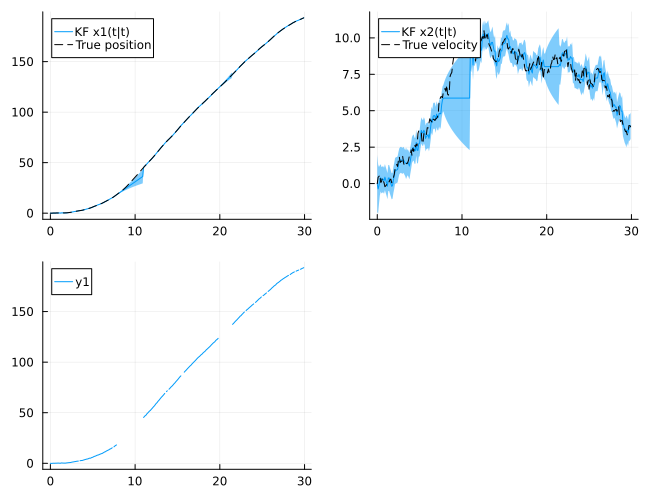
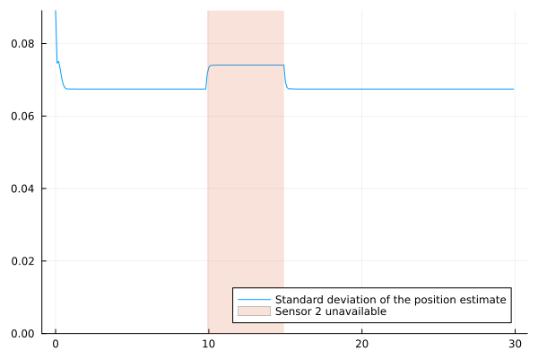
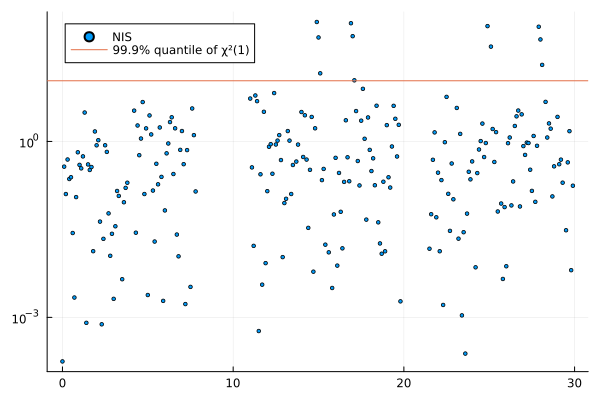
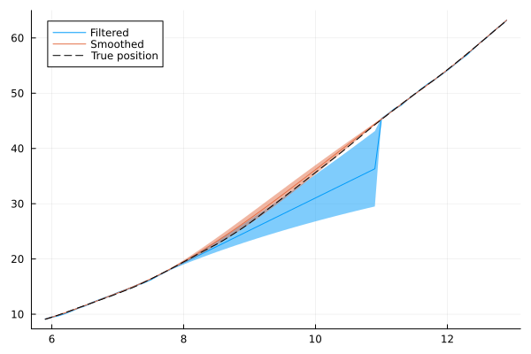

Missing data and outliers
Measurement data recorded from physical systems is rarely complete. Sensors drop samples, logging systems store data at irregular time points, and individual measurements may be corrupted by outliers. This tutorial demonstrates how such data is handled by the Kalman-type filters in this package, covering
- representation of missing measurements,
- data recorded at irregular time points,
- likelihood evaluation and parameter estimation with missing data,
- detection and rejection of outliers,
- quantization and slowly varying disturbances,
- smoothing over intervals without data.
Throughout, we use a double integrator, where the position is measured and the velocity is driven by continuous-time white noise.
using LowLevelParticleFilters, LinearAlgebra, StaticArrays, Plots, Random, Statistics
using LowLevelParticleFilters: SimpleMvNormal
using Distributions: Chisq, quantile
Ts = 0.1
A = SA[1 Ts; 0 1]
B = @SMatrix zeros(2, 0)
C = SA[1.0 0]
σw = 1.0 # Standard deviation of the noise acting on the velocity
σe = 0.1 # Standard deviation of the measurement noise
R1 = σw^2*LowLevelParticleFilters.double_integrator_covariance_smooth(Ts)
R2 = SA[σe^2;;]
d0 = SimpleMvNormal(SA[0.0, 0.0], SA[1.0 0; 0 1.0])
kf = KalmanFilter(A, B, C, 0, R1, R2, d0; Ts)
T = 300
u = [SVector{0, Float64}() for _ in 1:T]
x, u, y = simulate(kf, u)
timevec = range(0, step=Ts, length=T)Representation of missing measurements
A missing measurement is represented by the value missing, alternatively, by an array of which all entries are missing. To store missing in the measurement vector, the element type of the vector must admit missing, i.e., be a Union with Missing:
ym = Vector{Union{Missing, eltype(y)}}(y)
ym[80:110] .= missing # A longer interval without data
ym[200:215] .= missing
ym[rand(1:T, 15)] .= missing # Isolated missing samplesforward_trajectory skips the correction step for missing measurements, while the prediction step is performed as usual. During an interval without measurements, the filter thus predicts the state using the dynamics only, and the covariance of the estimate grows. The plot below shows the filtered estimate of the position with a band of ±1.96 standard deviations, together with the true position. Missing measurements are not drawn.
sol = forward_trajectory(kf, u, ym)
plot(sol, plotx=false, plotxt=true, plotRt=true, plotu=false, ploty=true, plotyh=false, size=(650, 500))
plot!(timevec, getindex.(x, 1), sp=1, label="True position", l=(:dash, :black))
plot!(timevec, getindex.(x, 2), sp=2, label="True velocity", l=(:dash, :black))
For a time step k with a missing measurement, the filtered estimate equals the prediction, sol.xt[k] == sol.x[k], the prediction error sol.e[k] is missing, and sol.S[k] and sol.K[k] are missing. The same applies to loglik, LowLevelParticleFilters.sse, LowLevelParticleFilters.prediction_errors! and LowLevelParticleFilters.multistep_prediction_errors!, as well as to filters that are updated manually using update!.
Partially missing measurement vectors
A measurement vector of which only some entries are missing, such as when one of several sensors fails to deliver a sample, is not accepted and results in an ArgumentError. Such entries may be handled by replacing the missing entries with an arbitrary finite value and assigning a very large variance to the corresponding entries of the measurement noise covariance for that time step. The filter then assigns a negligible weight to these entries in the correction step. Below, the position is measured by two sensors, where the second sensor has a larger noise variance and fails to deliver samples during part of the experiment. The callback pre_correct_cb of forward_trajectory returns the measurement noise covariance to use in the correction step.
C2 = SA[1.0 0; 1.0 0]
R22 = SA[σe^2 0; 0 (2σe)^2]
kf2 = KalmanFilter(A, B, C2, 0, R1, R22, d0; Ts)
y2 = [SVector{2, Union{Missing, Float64}}(yk[1], x[k][1] + 2σe*randn()) for (k, yk) in enumerate(y)]
for k in 100:150
y2[k] = SVector{2, Union{Missing, Float64}}(y2[k][1], missing)
end
y2_filled = [SVector{2}(coalesce.(yk, 0.0)) for yk in y2] # Replace missing entries by a finite value
function pre_correct_cb(kf, u, y, p, t)
k = round(Int, t/kf.Ts) + 1
m = ismissing.(y2[k])
any(m) || return nothing # Use the default R2
SMatrix{2,2}(Diagonal([m[i] ? 1e12 : R22[i, i] for i in 1:2]))
end
sol2 = forward_trajectory(kf2, u, y2_filled; pre_correct_cb)
plot(timevec, sqrt.(getindex.(sol2.Rt, 1)), label="Standard deviation of the position estimate", ylims=(0, Inf))
vspan!(timevec[[100, 150]], alpha=0.2, label="Sensor 2 unavailable")
The standard deviation of the position estimate increases while only the first sensor is available. This construction assumes that the measurement noise covariance is diagonal, otherwise the cross-covariance between the affected entries and the remaining entries must be set to zero as well. A very large variance adds an approximately constant term to the log-likelihood for each discarded entry, which does not affect comparisons of the log-likelihood between models for a fixed pattern of missing entries. When the log-likelihood is evaluated by loglik or LowLevelParticleFilters.prediction_errors!, which do not accept callbacks, the measurement noise covariance may instead be provided as a function R2(x, u, p, t) of time.
Data recorded at irregular time points
Data is often stored with time stamps, where the time between two consecutive samples varies, for example, since samples are dropped, or since data is logged only when a value changes. If the time stamps are integer multiples of a base sample interval (up to rounding errors), the data can be mapped to a uniform grid with this sample interval, where grid points without data are marked as missing:
keep = sort(unique(rand(1:T, 120))) # Indices of the samples that were recorded
t_obs = timevec[keep] .+ 1e-6 .* randn(length(keep)) # Time stamps contain rounding errors
y_obs = y[keep]
k_obs = round.(Int, (t_obs .- t_obs[1]) ./ Ts) .+ 1 # Grid index of each sample
y_grid = Vector{Union{Missing, eltype(y_obs)}}(missing, k_obs[end])
y_grid[k_obs] .= y_obs
count(ismissing, y_grid), length(y_grid)(197, 299)The data should not be interpolated onto the grid. The errors of interpolated values are correlated in time and do not have the variance R2 of the measurement noise, and a filter that treats interpolated values as measurements is thus overconfident. To illustrate this, we simulate the system repeatedly, remove the measurements between time steps 80 and 110, and compare two filters: one where the removed measurements are marked as missing, and one where they are replaced by a linear interpolation between the measurements before and after the interval. For each filter, we compute the fraction of the time steps in the interval, over all simulations, for which the true position lies within the ±1.96σ band of the filtered estimate. For a filter that represents its uncertainty correctly, this fraction is close to 0.95.
gap = 80:110
function interpolate_gap(y, gap)
yi = copy(y)
for k in gap
λ = (k - (gap[1] - 1)) / (length(gap) + 1)
yi[k] = (1 - λ)*y[gap[1]-1] + λ*y[gap[end]+1]
end
yi
end
within_band(sol, x, k) = abs(sol.xt[k][1] - x[k][1]) < 1.96sqrt(sol.Rt[k][1, 1])
coverage_missing, coverage_interp = let n_missing = 0, n_interp = 0, N_sim = 200
for i in 1:N_sim
xi, _, yi = simulate(kf, u)
yim = Vector{Union{Missing, eltype(yi)}}(yi)
yim[gap] .= missing
sol_m = forward_trajectory(kf, u, yim)
sol_i = forward_trajectory(kf, u, interpolate_gap(yi, gap))
n_missing += count(within_band(sol_m, xi, k) for k in gap)
n_interp += count(within_band(sol_i, xi, k) for k in gap)
end
n_missing / (N_sim*length(gap)), n_interp / (N_sim*length(gap))
end(0.9403225806451613, 0.2998387096774194)When the interval is represented by missing measurements, the band reflects the uncertainty of the estimate, while the filter that uses interpolated values reports a variance that is far too small. If the sample interval is not a multiple of a base interval, see Stochastic sample rate in the section on discretization.
Likelihood and parameter estimation with missing data
The log-likelihood computed by loglik is the sum of the log-likelihood contributions of the available measurements:
loglik(kf, u, ym) ≈ sol.lltrueSince missing measurements are skipped by all functions that evaluate the log-likelihood or the prediction errors, parameter estimation methods apply to data with missing samples without modification. LowLevelParticleFilters.prediction_errors! stores zeros in place of the prediction errors of missing measurements (and, when loglik = true, the constant sqrt(offset) in place of the logarithmic term), the layout of the residual vector, and thereby the number of residuals expected by a Gauss-Newton optimizer, is thus independent of which measurements are missing. Below, we estimate the standard deviations $σ_w$ and $σ_e$ by maximum likelihood, using a Gauss-Newton optimizer from LeastSquaresOptim.jl. The parameters are the logarithms of the standard deviations, which ensures that the covariance matrices are positive definite. See Using an optimizer and Estimating noise covariances for further details.
using LeastSquaresOptim
R̄1 = LowLevelParticleFilters.double_integrator_covariance_smooth(Ts)
ny = 1
offset = 10 # Ensures that the logarithmic term of each residual is positive, see the docstring of prediction_errors!
function residuals!(r, θ)
T_ = eltype(θ)
d0T = SimpleMvNormal(T_.(d0.μ), T_.(d0.Σ))
kfθ = KalmanFilter(A, B, C, 0, exp(2θ[1])*R̄1, SA[exp(2θ[2]);;], d0T; Ts)
LowLevelParticleFilters.prediction_errors!(r, kfθ, u, ym; loglik=true, offset)
end
θ0 = log.([0.3, 0.5]) # Initial guess of the standard deviations
res = optimize!(LeastSquaresProblem(x = θ0, f! = residuals!, output_length = T*(ny+1), autodiff = :forward), LevenbergMarquardt())
exp.(res.minimizer), [σw, σe]([1.001249023187774, 0.08649398374700304], [1.0, 0.1])The function autotune_covariances performs maximum-likelihood estimation of the covariance matrices of a filter in the same manner, and accepts filtering solutions computed from data with missing measurements as well.
Outliers
An outlier is a measurement with an error that is much larger than what the measurement noise model admits. A Kalman filter is sensitive to outliers, since the correction is proportional to the prediction error. Outliers can be detected by means of the normalized innovation squared (NIS), $e^T S^{-1} e$, where $e$ is the prediction error and $S$ its covariance. If the model is correct, the NIS follows a $χ^2$ distribution with $n_y$ degrees of freedom. We add a few outliers to the data and compute the NIS for each time step:
outlier_inds = [40, 150, 170, 250, 280]
yo = copy(ym)
for k in outlier_inds
yo[k] = y[k] .+ 15σe*rand((-1, 1))
end
nis(sol) = [S === missing ? NaN : e'*(S\e) for (e, S) in zip(sol.e, sol.S)]
sol_o = forward_trajectory(kf, u, yo)
threshold = quantile(Chisq(1), 0.999)
scatter(timevec, nis(sol_o), yscale=:log10, label="NIS", ms=2)
hline!([threshold], label="99.9% quantile of χ²(1)")
The NIS of the samples following an outlier is large as well, since the outlier has corrupted the estimate on which the following predictions are based. Marking all samples with an NIS above the threshold as missing after filtering would therefore discard valid measurements. Instead, measurements may be rejected while filtering, which also applies to filters that run online. The callback pre_correct_cb below computes the NIS from the predicted state and covariance, and returns an inflated measurement noise covariance when the NIS exceeds the threshold, which reduces the influence of the measurement on the estimate to a negligible level. The callback also records the time steps of the rejected measurements.
rejected = Int[]
function reject_outliers(kf, u, y, p, t)
e = y - C*kf.x
S = C*kf.R*C' + R2
if e'*(S\e) > threshold
push!(rejected, round(Int, t/kf.Ts) + 1)
return 1e6*R2
end
nothing
end
sol_online = forward_trajectory(kf, u, yo; pre_correct_cb = reject_outliers)
rejected5-element Vector{Int64}:
40
150
170
250
280The rejected measurements may subsequently be marked as missing in the data set, after which, e.g., the log-likelihood can be evaluated using loglik, which does not accept callbacks, and the data can be smoothed:
yr = copy(yo)
yr[rejected] .= missing
sol_r = forward_trajectory(kf, u, yr)
available = findall(!ismissing, ym)
rms_error(sol) = sqrt(mean(abs2, sol.xt[k][1] - x[k][1] for k in available))
rms_error(sol), rms_error(sol_o), rms_error(sol_online), rms_error(sol_r)(0.06818581131340672, 0.16261221720635033, 0.06885459636856851, 0.06885456899729367)The numbers above are the root-mean-square errors of the filtered position estimate at the time steps with available measurements, for the data without outliers, the data with outliers, and the data with outliers rejected during filtering and marked as missing, respectively. A threshold that is too low rejects valid measurements. This is most likely during the transient of the filter and after intervals without data, when the prediction errors are large, and a filter that rejects the measurements following such an interval may fail to recover. A filter with a heavy-tailed measurement noise model, such as a particle filter, is an alternative when outliers are frequent.
Quantization
A sensor with resolution $Δ$ rounds the measured value to the nearest multiple of $Δ$. If the signal varies over several quantization levels between samples, the quantization error is approximately uniformly distributed on $[-Δ/2, Δ/2]$, independent between samples and of the signal, and has variance $Δ^2/12$. This variance is added to the variance of the measurement noise:
Δ = 0.05
R2q = R2 + SA[Δ^2/12;;]1×1 StaticArraysCore.SMatrix{1, 1, Float64, 1} with indices SOneTo(1)×SOneTo(1):
0.010208333333333335If the signal varies by less than one quantization level over long intervals, the quantization error is strongly correlated in time, and the variance above underestimates its effect on the estimate.
Slowly varying disturbances
Slowly varying disturbances, such as drift, bias, or environmental influences that are not measured, cause prediction errors that are correlated in time. Such disturbances are modeled by augmenting the model with additional state variables, e.g., an integrator driven by white noise, that the filter estimates together with the state of the system. The Fault detection tutorial uses this approach, and the Disturbance gallery contains a collection of disturbance models.
Smoothing over intervals without data
The smoother uses the measurements after an interval without data as well, and the uncertainty of the smoothed estimate in the interval is thus smaller than that of the filtered estimate. The plot below shows the filtered and smoothed estimates of the position around the interval between time steps 80 and 110.
ssol = smooth(sol)
inds = 60:130
plot(timevec[inds], getindex.(sol.xt[inds], 1), ribbon=1.96sqrt.(getindex.(sol.Rt[inds], 1)), label="Filtered")
plot!(timevec[inds], getindex.(ssol.xT[inds], 1), ribbon=1.96sqrt.(getindex.(ssol.RT[inds], 1)), label="Smoothed")
plot!(timevec[inds], getindex.(x[inds], 1), label="True position", l=(:dash, :black))